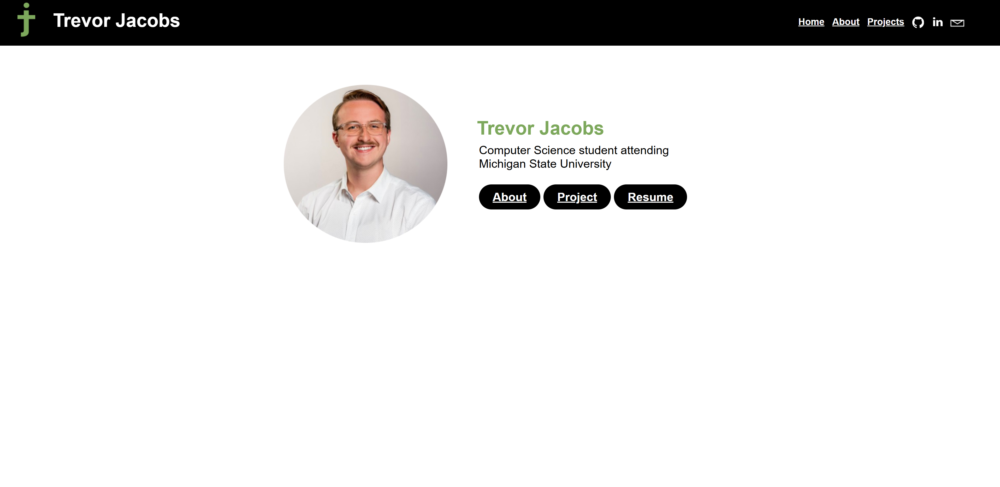
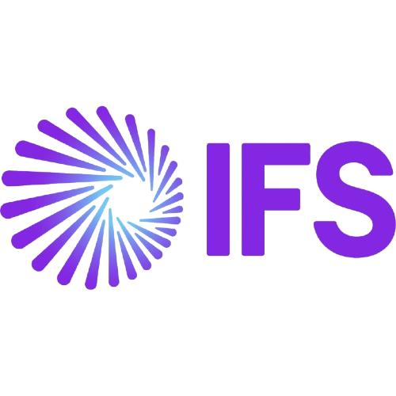

Michigan State University: 'Movie Creation'
This C++ program was developed using the IDE CLion. It allows the user to create .anim files using various characters and props, such as a basketball, or the famous college mascot, Sparty. This program was designed collaberatively in a team and using Visual Paradigm to create the UML, but the implementation of the code was done individually. The video shows a 10-second short film, featuring a generic character, Sparty, and a Michigan State Basketball.
Personal: Website Creation
This portfolio website was a project that I decided to make on my own time. I wanted to design a website to not only display my coding skills, but also have a hub to display the projects that I have worked on in both school and during my free time. I used a mixture of HTML and CSS to create the design of this website, and will consistently update this website with new projects, resumes, and career moves.
Gordon Food Service: IFS Field Service Management Health Check
During my time at Gordon Food Service, I was tasked to run a health check of the IFS Field Service Management system. This used programs such as the FSM health check tool and splunk to determine what issues the system currently is dealing with. I also had to check all discrepancies between metadata and database information using the FSM application and SQL. Finally, I was takes to audit all of the buisness rules used by the IT department to determine if any causing slow downs or issues on the FSM system.